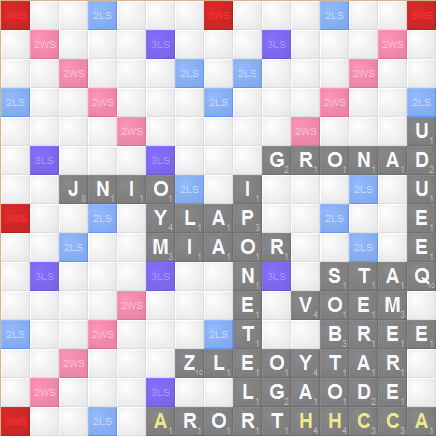
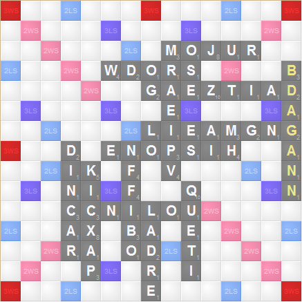
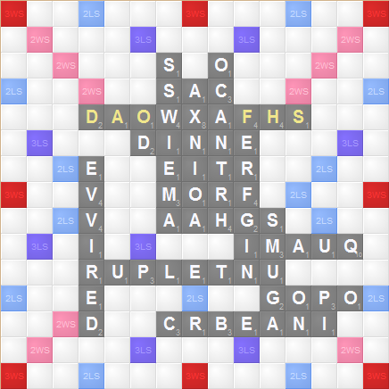
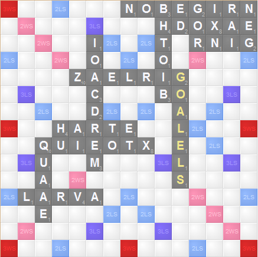
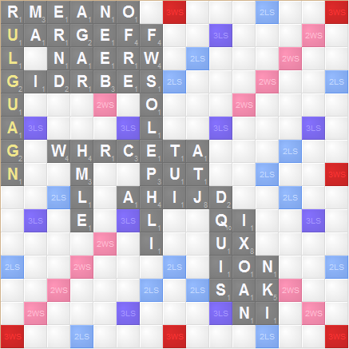
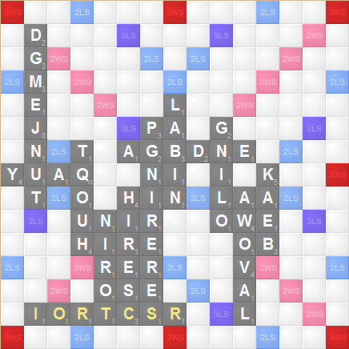
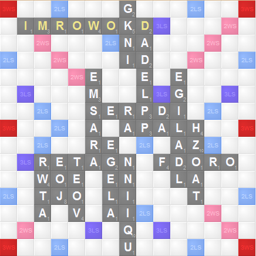
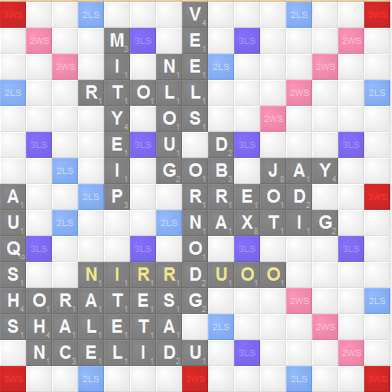

Solution to Stronghold Fire
Author: Aaron Bader
Each of the games is an in-progress Clabbers game, in which the player needs to find a high scoring play. The problem is that there really aren't any great plays. What to do in this situation?
The observant solver will notice that many of the words on the board are either directly related to Tolkien mythology (HOBBIT, FELLOWSHIP, BILBO) or are legal words with Tolkien related anagrams (FORDO = FRODO, MERIADOC = RACEMOID). Furthermore, the first words played on each board, the horizontal ones including the middle star, spell out the phrase, "Play phonies from middle earth put them in alpha order."
Each board has a high scoring play using exactly one phony from Tolkien mythology. (You might be able to use additional Tolkien phonies, but they won't score you any extra points.) The highest scoring arrangements for these plays all are between 101 and 126 points. Putting the plays in alphabetical order, and then subtracting the original 100 point deficit in the flavor text spells out the answer WORMTONGUE, a clever opponent, who likes to twist words around, that you shouldn't feel bad about bluffing a phony on!
Full solutions below, phony Tolkien words are italicized, and appear at the top of the "Word" column. There are many possible alternate arrangements of letters that yield the maximum score, but none give a higher score without making an illegal word (neither in TWL06 or Tolkien-related.)

|
Word Score
-----------------
CARCHAROTH 72
HAY 9
BOOTHS 19
CARTED 9
AMERCE 10
-----------------
Total 115
|
Extra Tolkien words
Moria (moira)
Telperion (interlope)
Deagol (gaoled)
Bree
Dragon
|

|
Word Score
-----------------
ANGBAND 92
GLEAMING 12
AGATIZED 19
-----------------
Total 123
|
Extra Tolkien words
Vampire
Sword
Boffin
Council
Cirdan (rancid)
Eldar (alder)
|

|
Word Score
-----------------
SHADOWFAX 104
REFFING 14
DO 3
-----------------
Total 121
|
Extra Tolkien words
Samwise (swamies)
Orthanc (chantor)
Smaug (gaums)
Crebain (carbine)
|

|
Word Score
-----------------
GANDALF 48
DWARF 24
LAMIA 7
VULCANISES 14
BANED 8
BERG 7
IDLE 10
-----------------
Total 118
|
Extra Tolkien words
Isengard (deraigns)
Lorien (neroli)
Maia (amia)
Phial
|

|
Word Score
-----------------
LEGOLAS 82
GLAZIER 34
BO 4
-----------------
Total 120
|
Extra Tolkien words
Beorning (ringbone)
Ring
Meriadoc (racemoid)
Hobbit
Valar (larva)
|

|
Word Score
-----------------
GLAURUNG 86
GAUFFER 14
BRIDGES 13
-----------------
Total 113
|
Extra Tolkien words
Fellowship
Gaffer
Arwen (rewan)
Helm
|

|
Word Score
-----------------
SILMARIL 83
WINE 7
RUTS 5
RAIL 4
RAIL 4
AI 2
-----------------
Total 105
|
Extra Tolkien words
Wraith
Anduril (diurnal)
Tower
Bilbo
Goblin
|

|
Word Score
-----------------
ORCRIST 80
RICHES 17
PEREGRINS 12
INTRO 5
-----------------
Total 114
|
Extra Tolkien words
Peregrin
Shire
Nori
Bag-end (banged)
Gloin (lingo)
Balin (binal)
|

|
Word Score
-----------------
MIRKWOOD 102
DAPPLED 13
-----------------
Total 115
|
Extra Tolkien words
King
Egladil (gallied)
Frodo (fordo)
Spider
Mearas (arames)
Eagle
|

|
Word Score
-----------------
ORODRUIN 86
RADS 5
TIER 4
TILE 8
LANE 4
-----------------
Total 107
|
Extra Tolkien words
Gondor (drongo)
Esgaroth (shortage)
Athelas (altheas)
Celduin (include)
Ungol (gluon)
Bard
Elves
Troll
|